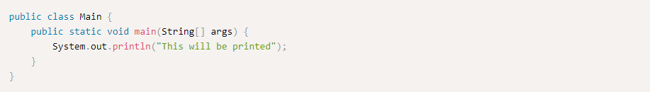
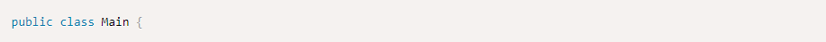
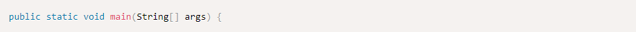

Hello, World!
Java is an object oriented language (OOP). Java objects are part of so-called "Java classes".
Let's go over the Hello world program, which simply prints "Hello, World!" to the screen.

The first line defines a class called Main.

In Java, every line of code that can actually run needs to be inside a class. This line declares a class named
Main, which is public, that means that any other class can access it. This is not important for now, so don't
worry. For now, we'll just write our code in a class called Main, and talk about objects later on.
Notice that when we declare a public class, we must declare it inside a file with the same name (Main.java),
otherwise we'll get an error when compiling.
When running the examples on the site, we will not use the public keyword, since we write all our code in one
file.
The next line is:

This is the entry point of our Java program. the main method has to have this exact signature in order to be able
to run our program.